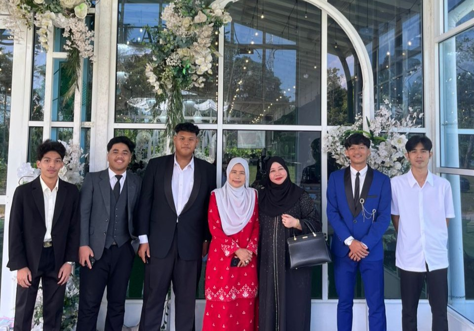
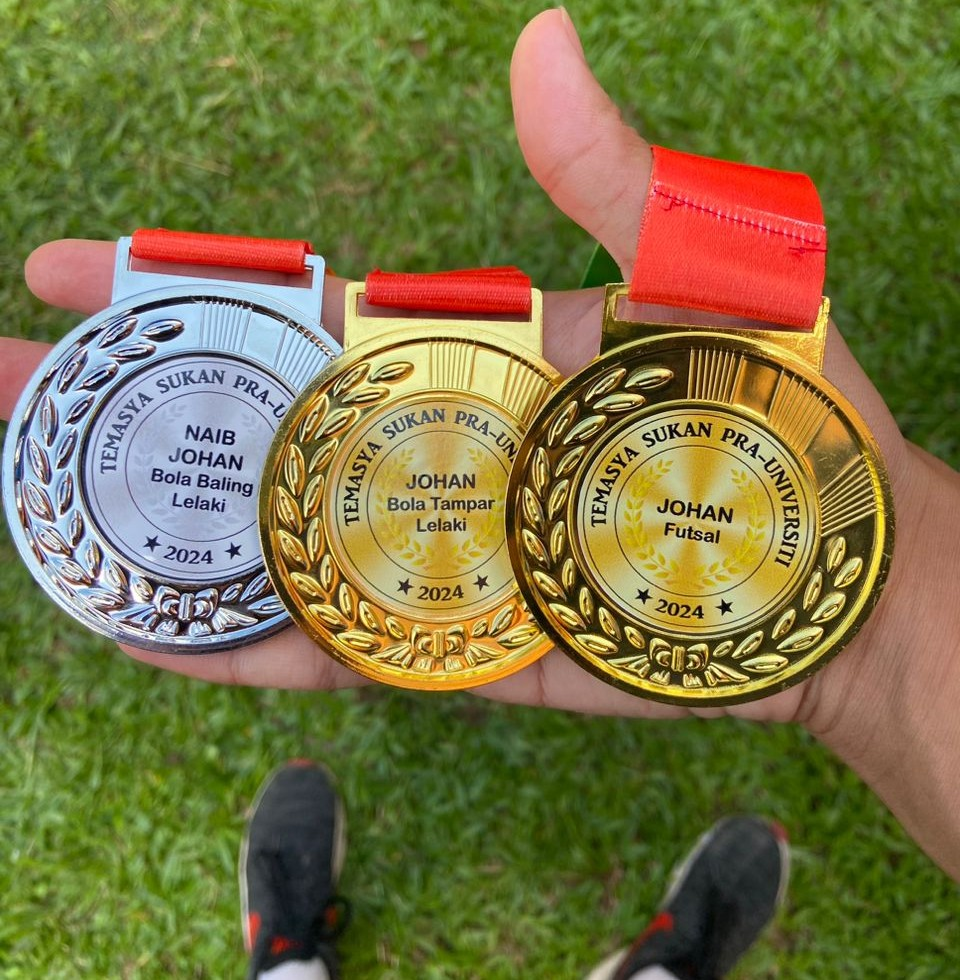
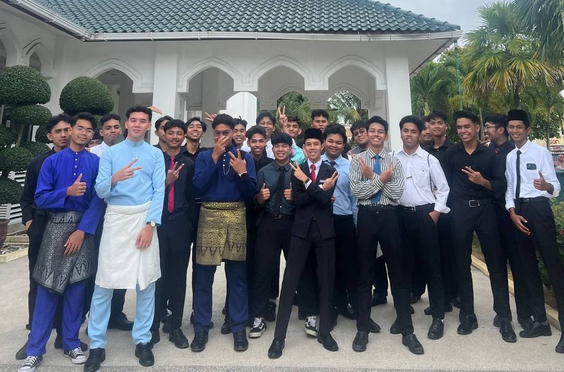

MY EXPERIENCES
Experiences & Projects
Photography
Captured photographs for personal projects, events, and outdoor activities while exploring different photography styles and techniques. Through this experience, I developed creativity, attention to detail, composition skills, and the ability to tell stories through visual content.

Volunteer Program
Participated in community service activities and collaborated with team members to support the successful organization of volunteer programs. This experience enhanced my teamwork, communication, leadership, and time management skills while strengthening my sense of responsibility and commitment to serving the community.

Sports Achievement
Participated in various university sports competitions and achieved Champion in Futsal, Champion in Men's Volleyball, and Runner-up in Men's Handball. These achievements reflect my dedication, discipline, and perseverance in sports while balancing my academic responsibilities. Through these experiences, I strengthened my teamwork, communication, and leadership skills, which continue to support my personal and professional development.

Seminar Participation
Attended academic seminars to broaden my knowledge and gain insights from experienced speakers and industry professionals. These sessions enhanced my understanding of current trends, strengthened my communication skills, and motivated me to continue developing both academically and professionally.